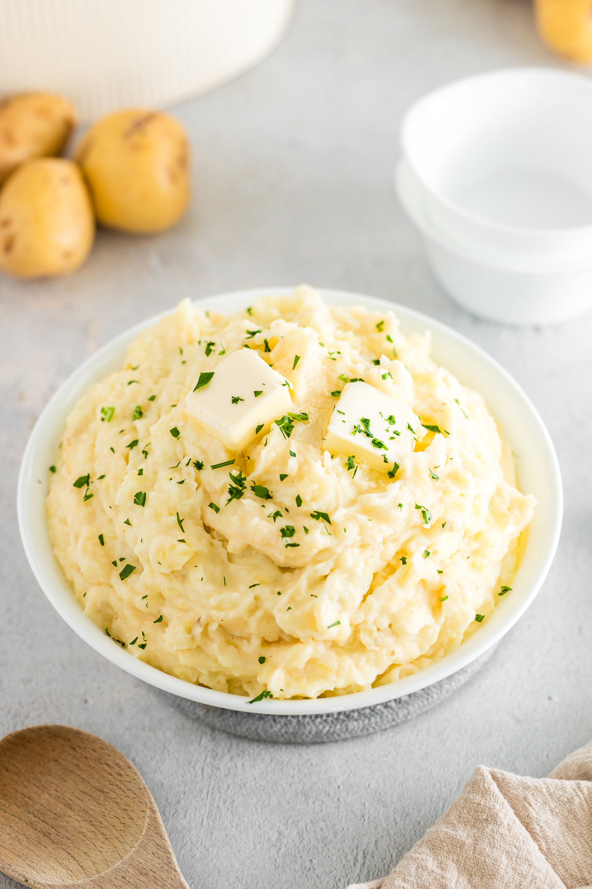

The best mashed potatoes are smooth, creamy, and buttery. This is my favorite recipe, made with russet potatoes, warm milk, and melted butter for light, fluffy results every time. It’s a classic side dish for the holidays or weeknight dinners!
Gather the ingredients.
Step 2Bring a large pot of salted water to a boil. Add potatoes and garlic, if using: reduce the heat to medium and simmer until potatoes are easily pierced with a fork, about 15 minutes.
Step 3When the potatoes are almost finished, heat milk and butter in a small saucepan over low heat until butter is melted.
Step 4Drain potatoes and garlic well; return to the hot pot for 1 to 2 minutes to remove excess moisture. Gradually add the warm milk mixture while mashing until smooth and creamy, using only as much as needed to reach your desired consistency.
Step 5Season with salt and pepper. Serve topped with extra butter, if desired.
Home